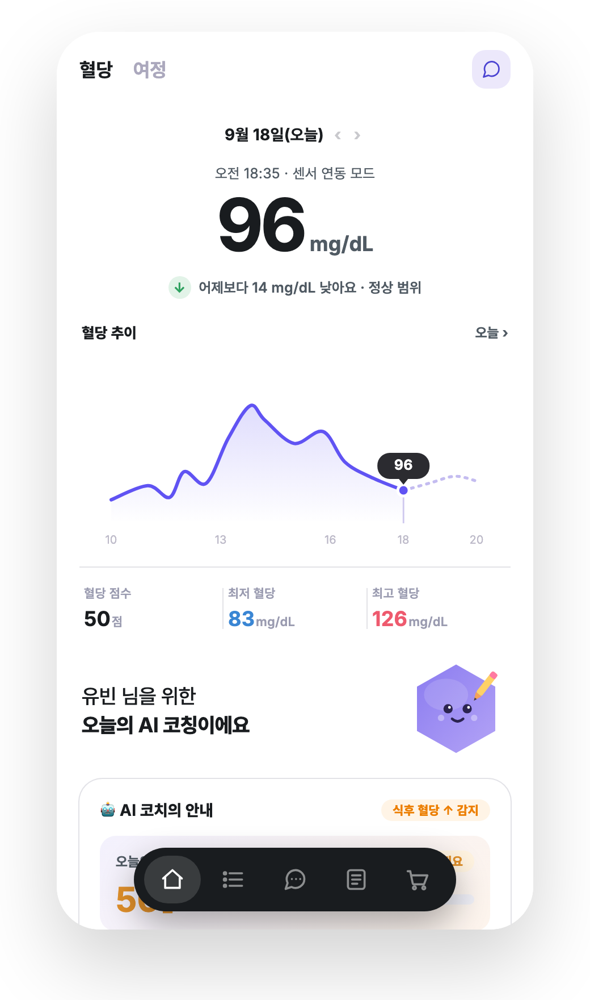
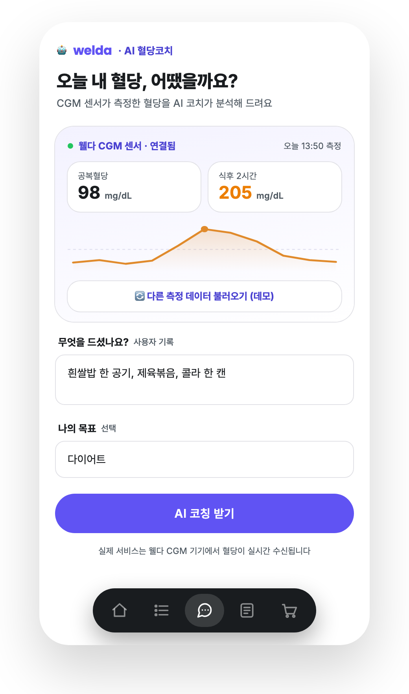
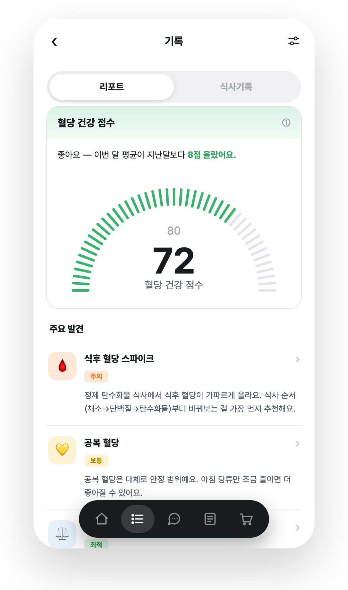
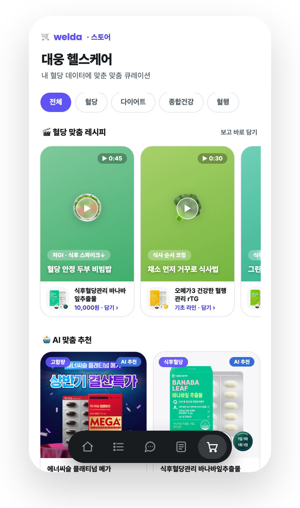

서비스기획·IA·사용자 플로우, 디자인 시스템 구축(QA 80%↓)
멀티에이전트 워크플로우 설계, 모델 라우팅·비용 최적화
UNO HOME IoT 헬스케어(CES 2026) 총괄
CGM 센서가 24시간 혈당 추적
혈당 점수 등 지표 제공
왜 올랐고 / 뭘 먹고 / 뭘 사야 하나 — 비어 있음
‘어떻게 하면 살이 빠지는지’를 데이터로 명확히 — 측정·점수에서 행동·습관으로
AI가 과학적 대사 원리·임상 근거로 안전하게 코칭 → 제약사 신뢰 수준
혈당 맞춤 제품·레시피 큐레이션으로 행동과 매출을 한 동선에
입력 → 정해진 출력(규칙 기반) · ‘무엇을 했는지’ 기록에서 끝
분석·코칭·검수·추천 역할 분리 + 반려 루프 — 안전성·맥락을 ‘판단’해 통과/재작성 결정




역할별 전문화 — 코칭 톤과 분석 정확도를 따로 최적화
모델 라우팅 — 단순 작업은 경량, 코칭만 고품질 모델
독립 검수자(Critic)가 의학·표시광고 리스크를 판단·차단
공복≥126·식후≥200 → risk_flag → ‘의료진 상담 권장’ 강제 삽입
의학적 단정·약물 권유·과장·공포 조장 적발 시 verdict=revise → Coach로 반려
‘치료/완치’ 단정 차단, 식약처 기능성 표현 범위로 교정
실존 의사 사칭·개인 진단 차단, 면책 고지 강제
역할별 모델 등급 분리
에이전트별 토큰·비용·latency·trace
Critic 적발률·반려 횟수
나만의 혈당 음식 사전 — 쓸수록 똑똑해지는 내 데이터
같은 메뉴 Before/After — ‘지난번 +94 → 오늘 +76’ 증명
오늘의 플랜 — 예정·진행·완료 (제안→실행→확인)